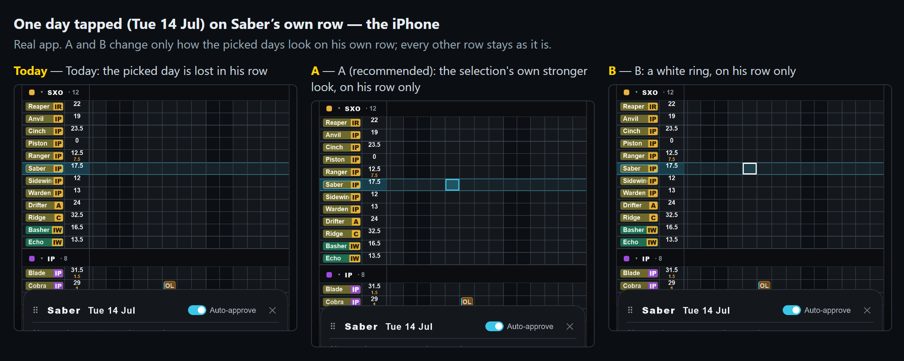
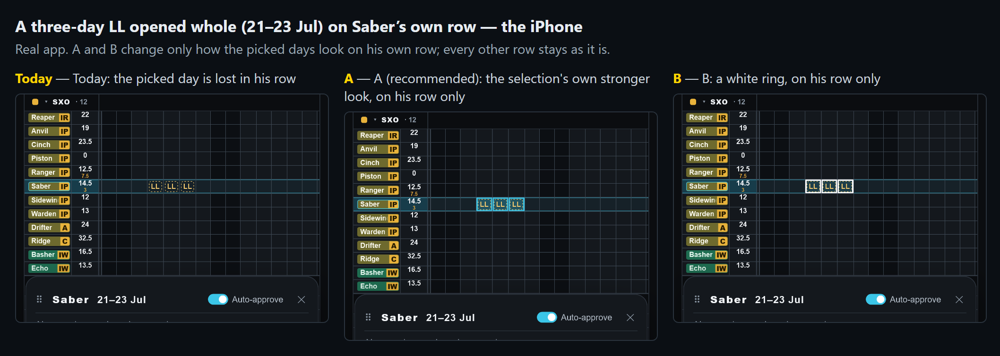
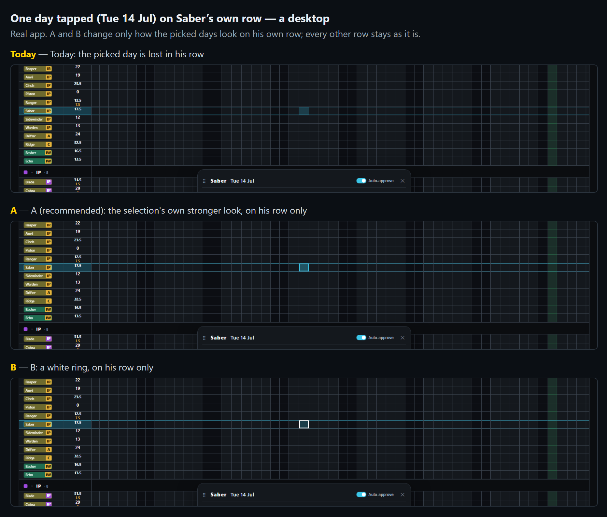
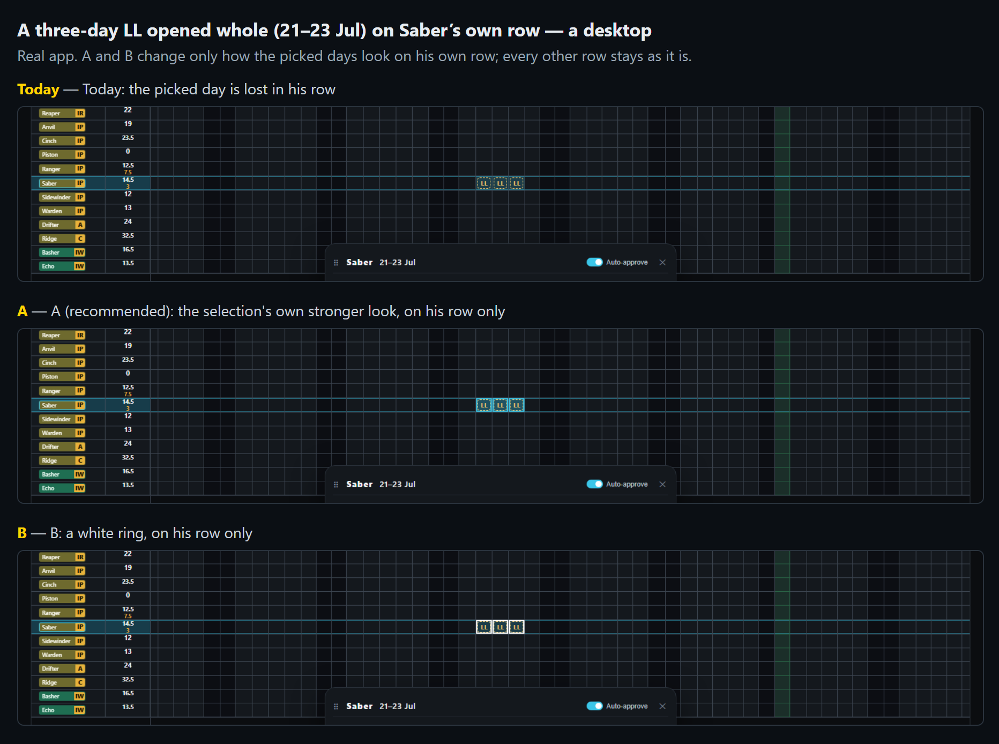

Your own row on the Leave War is lit in cyan, so you can find yourself. The day you tap is marked in the same cyan, and on your row the row’s own lines are drawn on top of the mark. On your iPhone the picked day simply disappears. Every other row shows it fine.
The same happens to a leave of several days opened whole: all its days are marked this way, so on your row none of them shows. The build I am finishing now (an Inputs entry of several days opening whole, your pick A of this morning) marks days the same way, so this fix goes on the same branch.
Every other row stays exactly as it is now. Pictures are the real app on your iPhone’s size and a desktop’s; A and B are drawn in. Tap a picture to see it full size.



